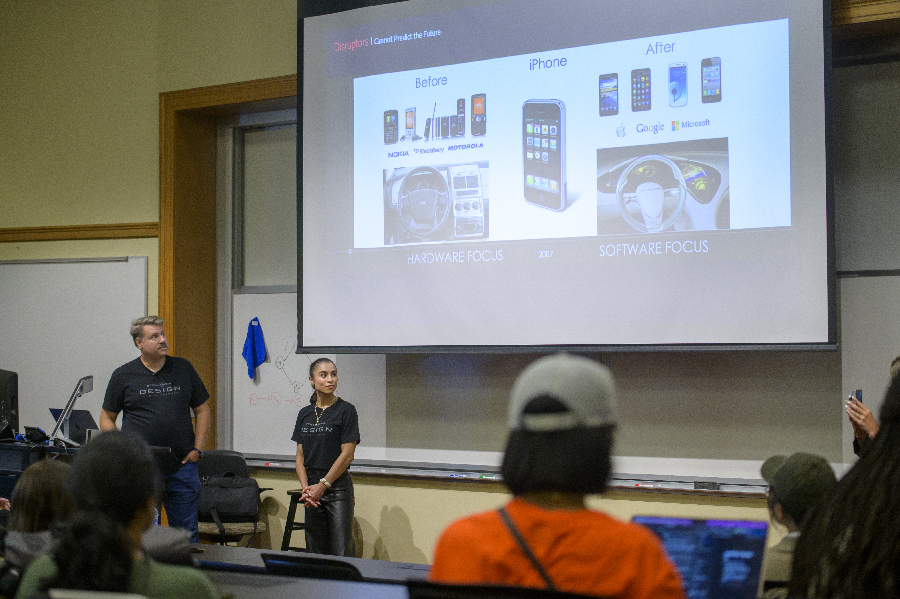

Career Exploration
The job link to some companys


Some events of UMSI Career Fair
In UMSI Career Fair, students have chance to direct send their resume to HR in campus. Students are able to talk with company representative and get the recommendations and feedbacks immediately.
